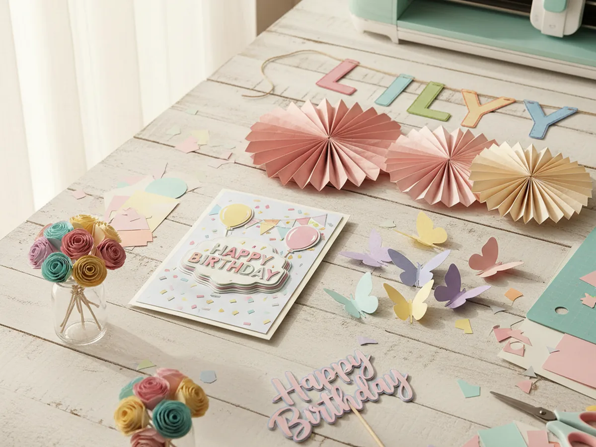
If you have a Cricut tucked into a closet (or you have been eyeing one for months), this is your sign to pull it out and make something sweet with your child today. These 20 Cricut paper crafts are simple, charming, and use mostly basic cardstock you probably already have. Each idea is gentle enough for little helpers to join in, even if all they do is press the green Go button. 🌷
What You'll Need
Most of these Cricut paper crafts share the same little kit, so once you have your machine warmed up, you can easily flow from one project to the next.
- Cricut Explore 3 Smart Cutting Machine, the heart of every project on this list and a great pick for paper-focused crafters.
- Astrobrights bright cardstock assortment, vivid colors that cut beautifully and make every paper craft pop.
- Cricut LightGrip cutting mats 12x12, the right tack for printer paper and lighter cardstock without tearing.
- Cricut StandardGrip cutting mats 12x12, your everyday workhorse mat for medium cardstock projects.
- Cricut Basic Tool Set 5-piece, a weeder, scraper, spatula, scissors, and tweezers for clean lift-off and finishing.
- Cricut Ultimate Fine Point Pen Set (30 pack), lets your machine draw and write before it cuts, perfect for cards and tags.
- Tombow Mono Multi liquid glue, dries clear and is ideal for assembling layered paper designs without warping.
- Elmer's Disappearing Purple glue sticks, kid-friendly and great for letting little ones help with simple gluing.
- Fiskars 8-inch all-purpose scissors, a sharp pair for trimming, fringing, and finishing edges by hand.
- Optional extras: baker's twine, ribbon, hole punch, and a few wooden skewers or paper straws.
20 Sweet Cricut Paper Craft Ideas
1. Layered 3D Birthday Card
Cut three layered shadow box layers in coordinating cardstock colors, glue them with foam tape between each layer, and add a sweet hand-lettered "Happy Birthday" on top. The dimensional look feels professional even though the project is genuinely beginner-friendly. These layered Cricut paper crafts are wonderful for grandparents who treasure handmade cards.
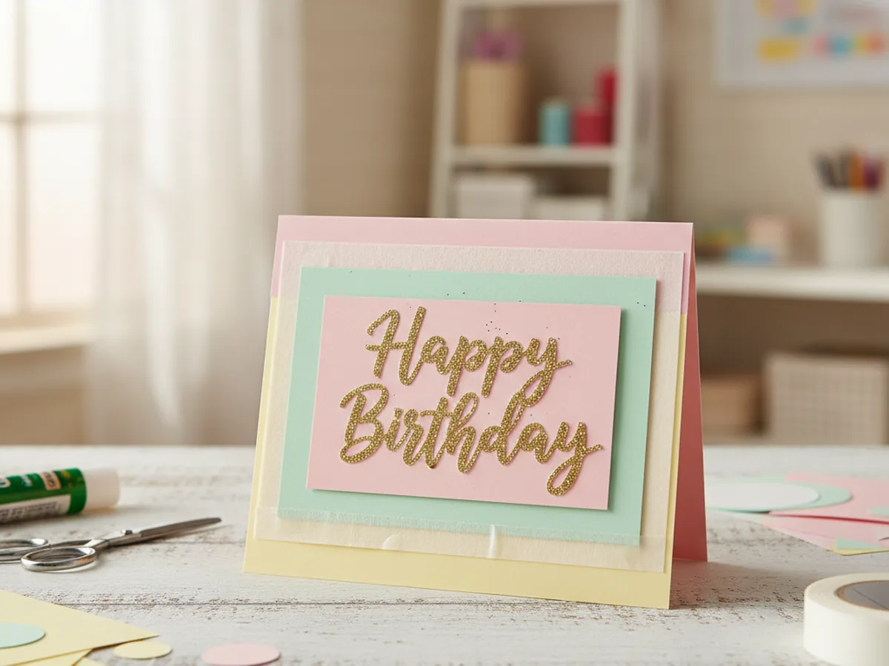
2. Personalized Name Banner
Cut your child's name letter by letter from bright cardstock, punch two holes at the top of each letter, and string them together with baker's twine. Hang it above their bed or play corner for an instant room upgrade. Toddlers love spotting their own name in giant letters, and the project is one of the easiest Cricut paper crafts to start with. ✨
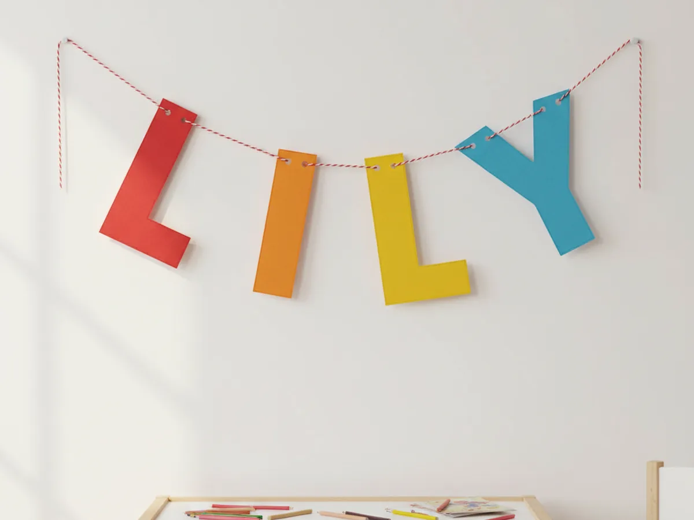
3. Giant Paper Rosettes
Cut a long scored strip of cardstock with the Cricut, accordion fold it, and glue the ends together to form a stunning round rosette. Make three sizes in coordinating colors and stick them to a wall for a party backdrop your kids will gasp at. They look complicated but the machine does the hard scoring work for you.
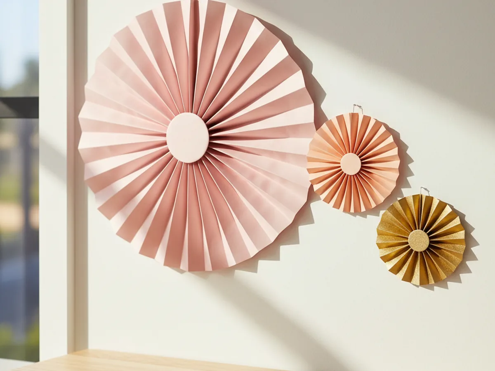
4. Paper Mandala Wall Art
Cut a delicate mandala design from white cardstock, mount it on a contrasting background, and pop it in a simple frame. The intricate design feels almost like lacework and makes a lovely handmade gift. Older kids enjoy weeding out the tiny pieces with the little hook tool, which is oddly satisfying for grown-ups too.
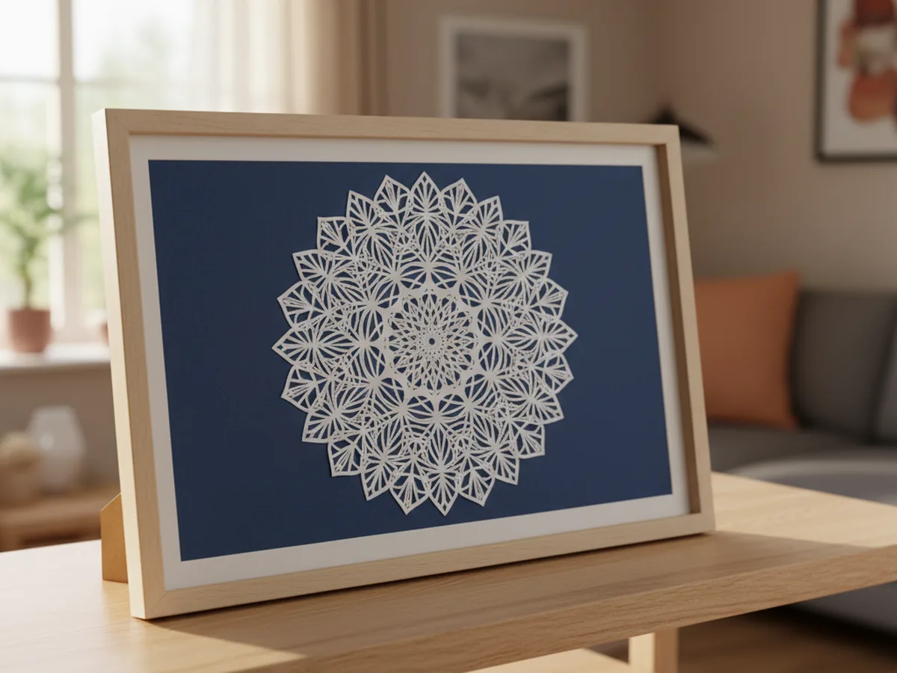
5. Butterfly Wall Decals
Cut a flock of butterflies in soft pastel cardstock, then bend the wings up slightly so they look like they are mid-flight. Tape them to your child's bedroom wall in a flying swoop pattern. Easy Cricut paper crafts like this one transform a plain wall into a magical garden in under thirty minutes.
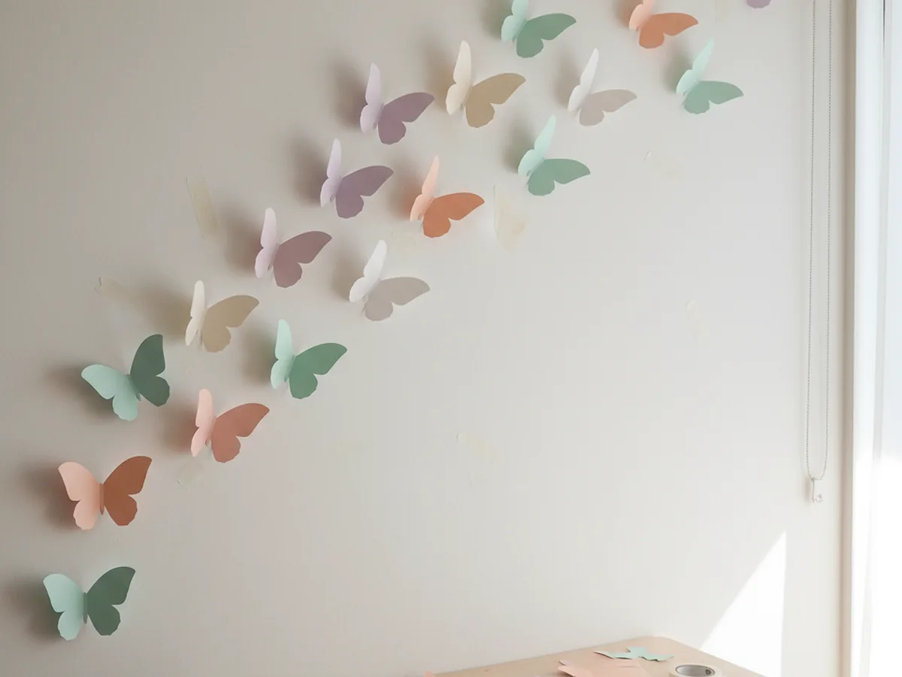
6. 3D Paper Flower Bouquet
Cut spiral flower templates in pinks, peaches, and yellows, roll each spiral tightly into a rose, and glue the base to hold the shape. Bunch them in a small jar with a few green paper leaves for a Mother's Day surprise that lasts forever. These flowers are some of the most rewarding Cricut paper crafts to make together.
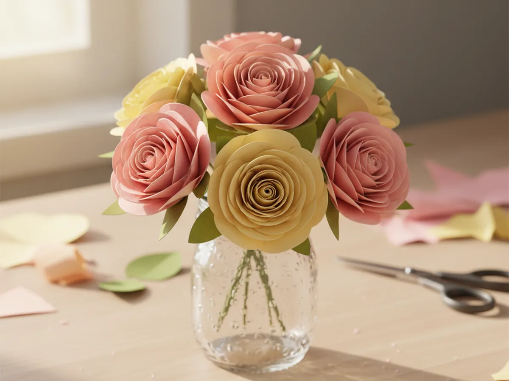
7. Mini Cardstock Favor Boxes
Cut small score-and-fold favor box templates in coordinating colors, fold along the score lines, and pop a few candies inside before sealing the lid. They are adorable for birthday parties, classroom treats, or a simple thank-you for the babysitter. Once you find a favorite template, you will keep coming back to it.
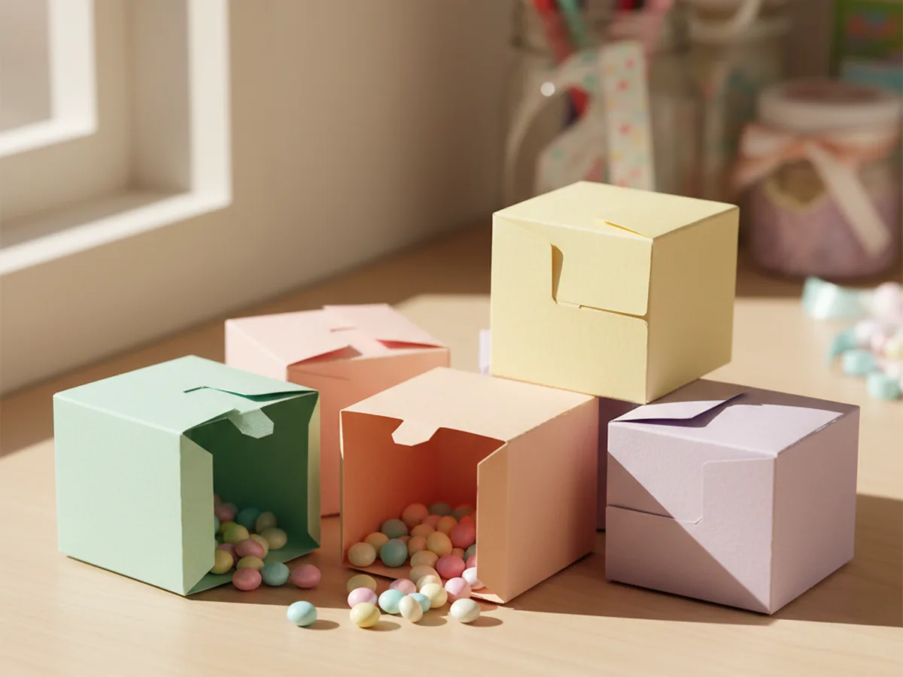
8. Birthday Cake Topper
Cut a child's name or "Happy Birthday" in fancy script from glittery cardstock, glue it onto two wooden skewers, and pop it into the cake. It instantly turns a simple bakery cake into a personalized centerpiece. This is one of the most photographed cute Cricut paper crafts in our home.
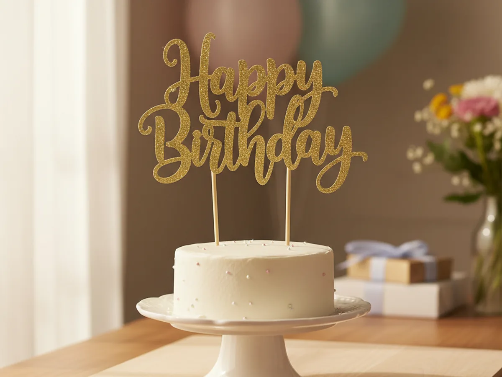
9. Heart-Shaped Gift Tags
Cut a stack of small heart tags in red, pink, and white cardstock, punch a hole at the top, and let your Cricut write a name on each one with a fine point pen. Tie one to every gift or lunchbox for a sweet surprise. Kids love sorting and assembling them at the kitchen table. 💕
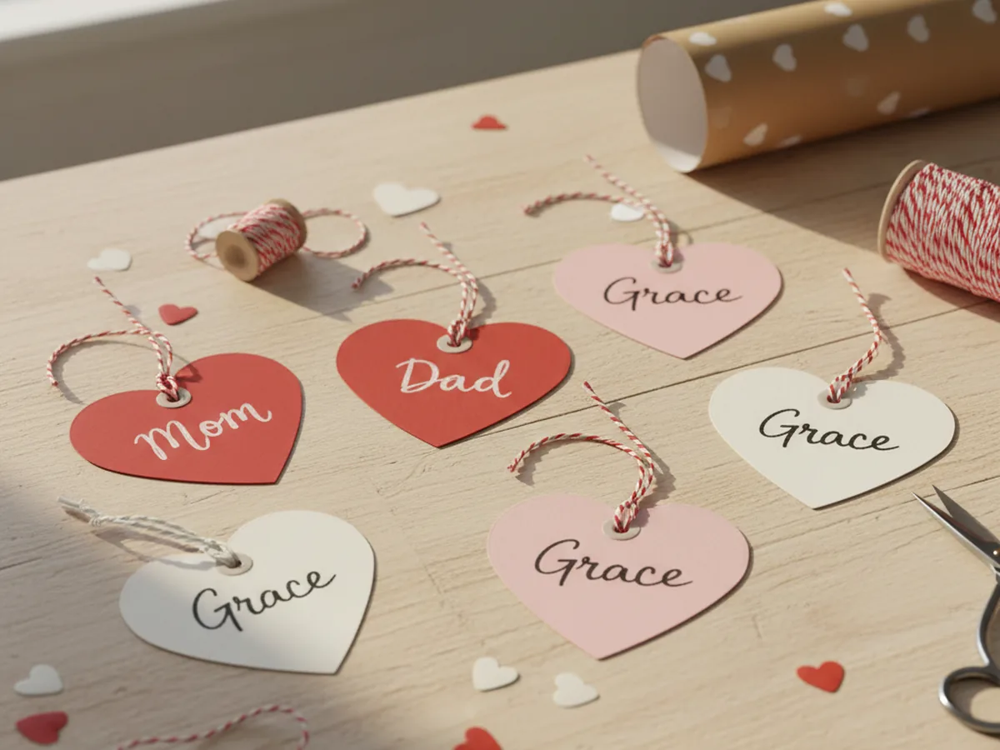
10. Snowflake Window Garland
Cut a dozen intricate snowflakes from white cardstock, string them on clear thread, and hang the garland across a window. The afternoon sunlight catches the cutouts and makes them shimmer beautifully. A magical winter Cricut paper craft idea that takes about thirty minutes from start to finish.
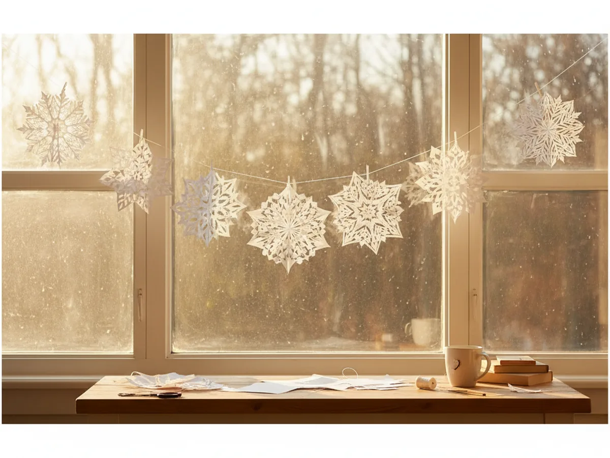
11. Mini Paper Pumpkins
Cut a few orange paper pumpkin shapes, glue them around a small foam ball or tissue puff, and add a tiny brown paper stem on top. Cluster three or four on the dining table for a cozy fall centerpiece. Older kids love the assembly part, while toddlers happily decorate their own with crayon faces.
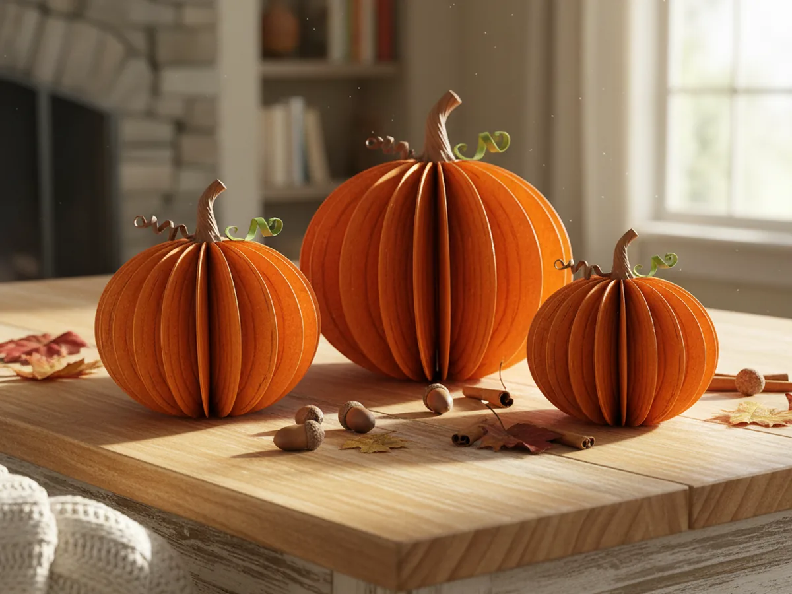
12. Cardstock Bookmark with Cutout Design
Cut a long rectangle in pretty cardstock with a heart, star, or flower shape stamped through the top corner, then add a tassel through a small hole. Each child can pick the design they want and end up with a bookmark they actually use. A wonderful little gift for grandparents or teachers.
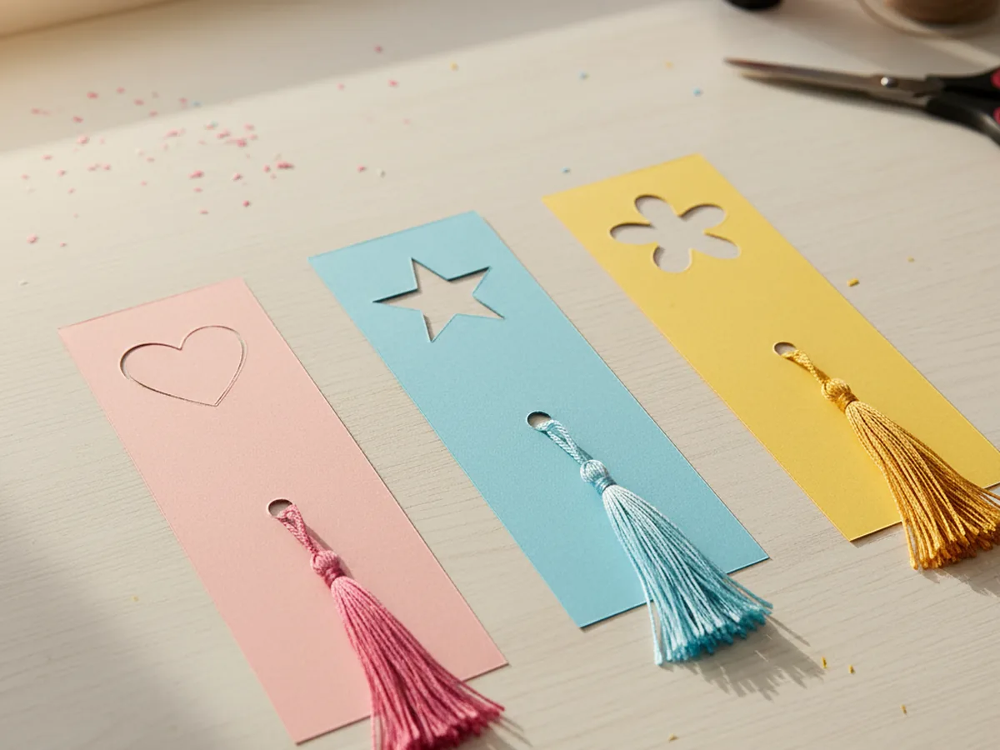
13. Layered Paper Easter Eggs
Cut large paper egg shapes and layer smaller patterned paper pieces on top in stripes, dots, and zigzags. Hang them on a small branch in a vase for a sweet Easter centerpiece that doubles as kid art. Spring Cricut paper crafts like this one bring a fresh splash of color to the table after a long winter. 🌷
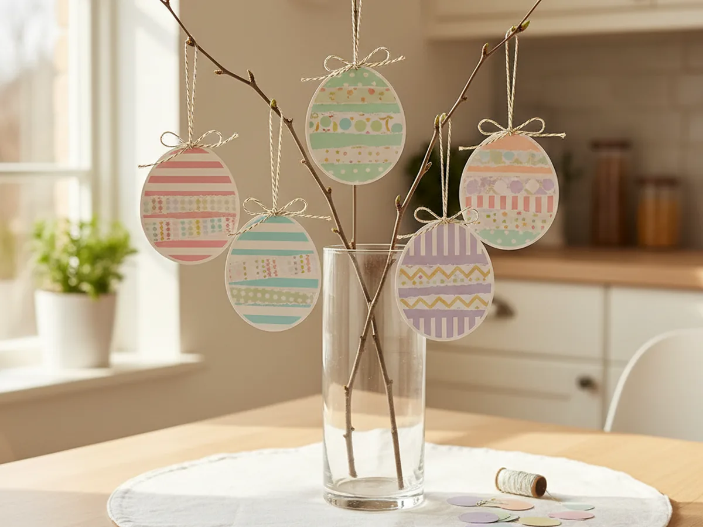
14. Paper Crown for Pretend Play
Cut a pointy crown band from gold or bright cardstock with little jewel-shaped cutouts along the top. Glue tissue paper or cellophane behind the cutouts so light shines through like real jewels. Kids will wear it through dinner, bedtime, and the next morning, which is exactly the point.
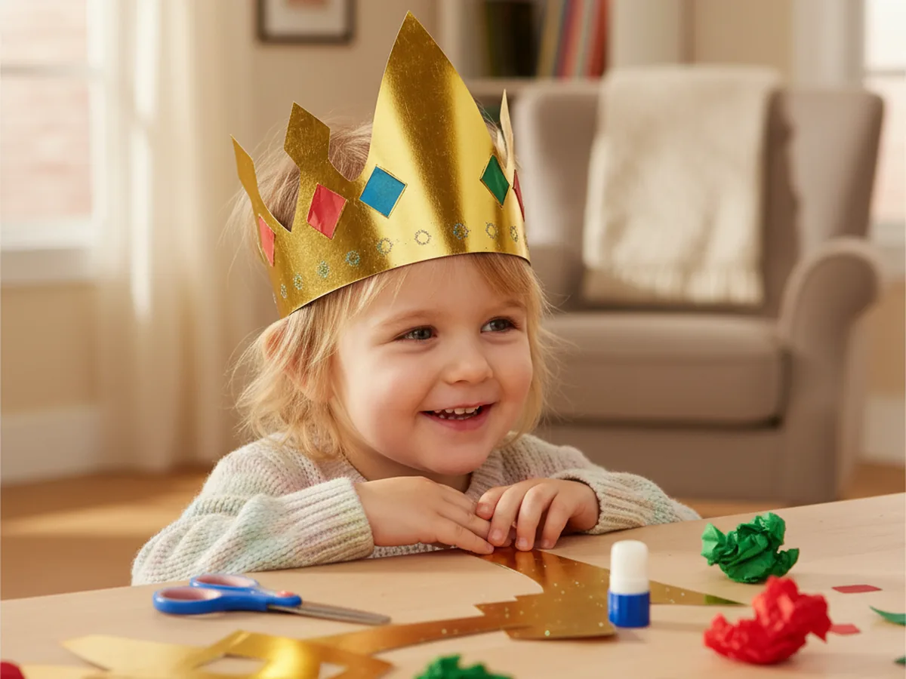
15. Geometric Paper Animal Faces
Cut simple geometric pieces in cardstock to assemble a fox, owl, or bear face. Each animal uses just six or seven pieces, so kids can lay them out and glue them with very little help. These charming animal faces look adorable framed above a play table or hung on a nursery wall.
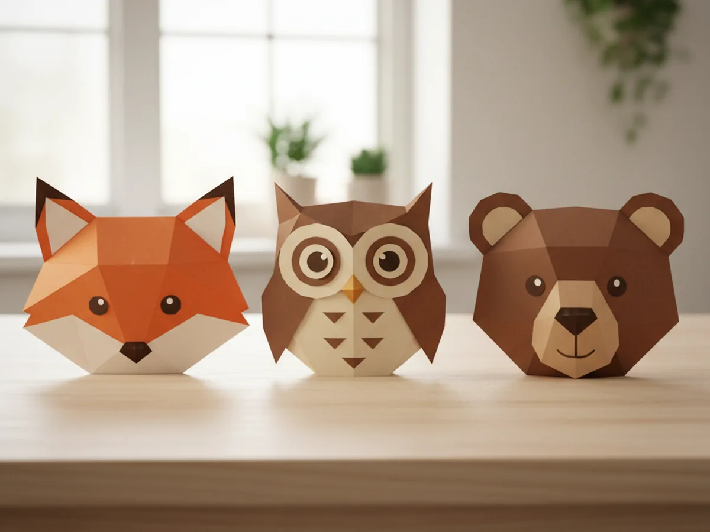
16. Holiday Tree Ornaments
Cut star, heart, and tree shapes from sturdy cardstock and decorate them with metallic markers or a quick glitter glue swirl. Punch a hole at the top, thread baker's twine through, and your homemade ornaments are ready for the tree. Some of the most cherished Cricut paper crafts for kids are the ones that come back out of the ornament box every year.
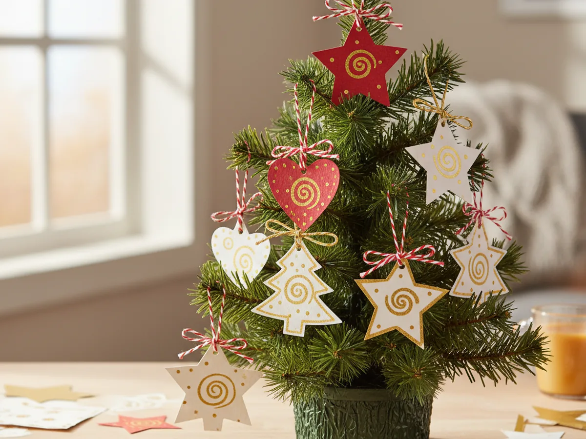
17. Paper Lantern Trio
Cut tall rectangles of cardstock with a series of vertical slits down the middle, fold the rectangle into a tube, and glue the seam. The slits open into pretty lantern shapes when you press gently from top to bottom. Hang three together in coordinating colors above a windowsill or a play kitchen.
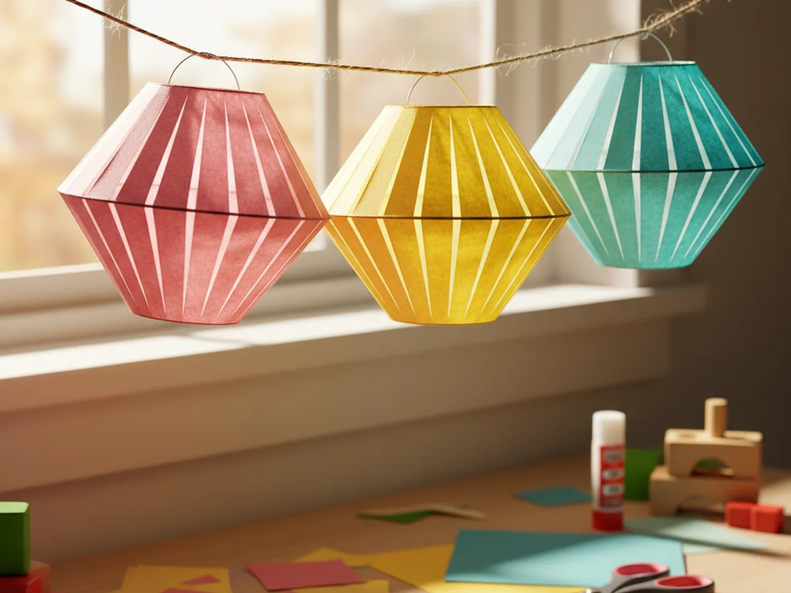
18. Watercolor Layered Flower Card
Cut soft watercolor-printed cardstock into nesting flower shapes (a big bloom, a smaller bloom, and a tiny center). Stack them with foam tape between each layer for a dimensional flower right on the front of a card. Fun Cricut paper crafts like this one feel like a tiny boutique purchase but cost almost nothing.
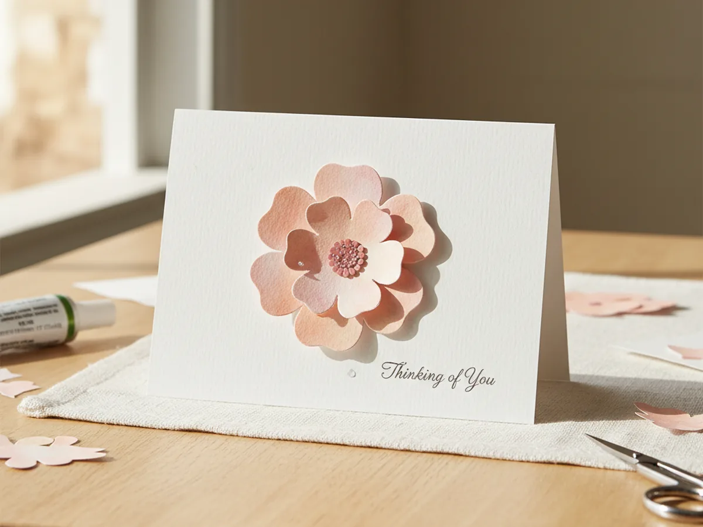
19. Cardstock Star Garland
Cut twenty small stars in white, gold, and pale blue cardstock, then sew them onto a length of thread with a few stitches through the middle of each star. The garland flutters gently in the breeze and looks magical above a crib, a reading nook, or a birthday backdrop. Kids love picking the order of colors.
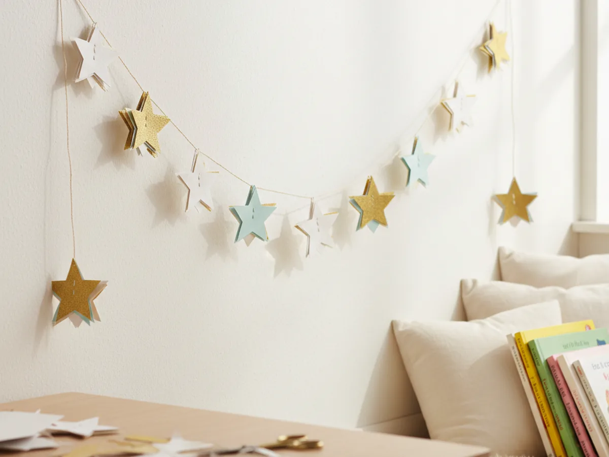
20. Cricut Paper Photo Frames
Cut decorative paper frame shapes with cute cutouts, glue a small photo of your child behind the opening, and add a magnet strip to the back so it sticks to the fridge. Simple, sweet, and the kind of project grandparents melt over. The perfect way to wrap up a list of easy Cricut paper crafts with one final keepsake idea.
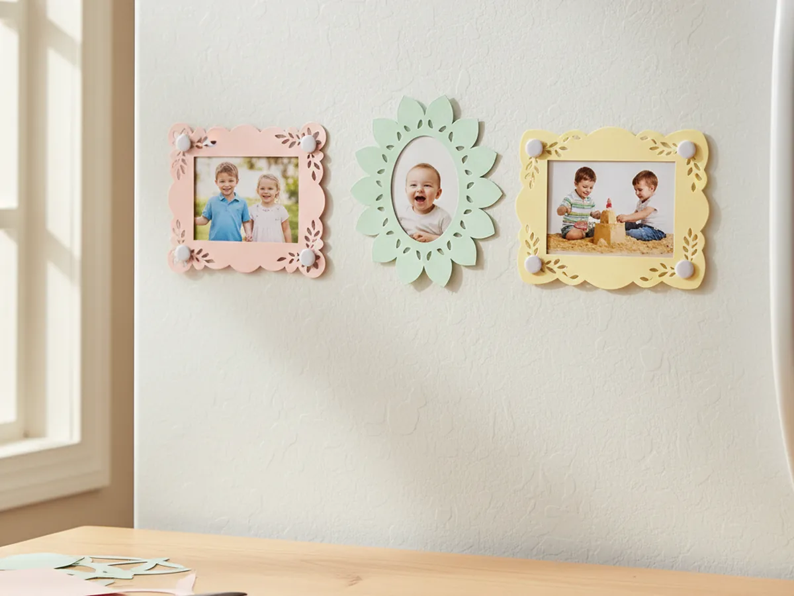
Final Thoughts
These Cricut paper crafts are the kind of projects that make your machine earn its place on the counter. Pick one for tonight, save a few for the next quiet weekend, or work through the whole list together as a sweet little tradition with your child. Cardstock is forgiving, the machine handles the precise bits, and the finished projects almost always come out cuter than expected. The best part, of course, is hearing your little one say "we made that together."
More Crafts You'll Love
If your kiddo loved these paper-and-machine ideas, here are two more roundups full of cute and simple inspiration.
Pull out your machine, queue up a fun playlist, and enjoy every colorful little moment with your child.